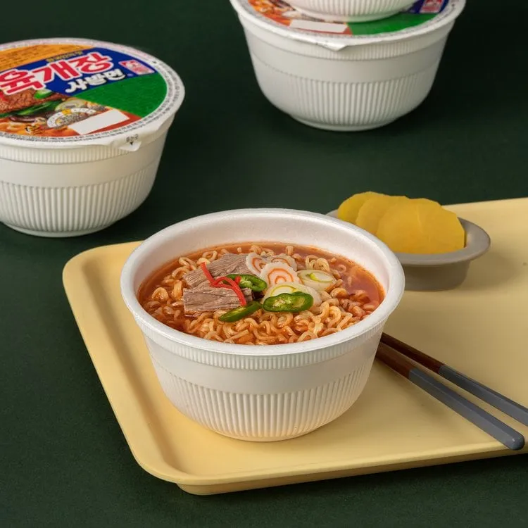

<!DOCTYPE html>
<html lang="en">
<head>
    <meta charset="UTF-8">
    <meta name="viewport" content="width=device-width, initial-scale=1.0">

    <!--Title and favicon-->
    <title>K-Ramen</title>
    <link rel="icon" type="image/x-icon" href="/images/logo.png">

    <!--Icon Library-->
    <link rel="stylesheet" href="https://cdnjs.cloudflare.com/ajax/libs/font-awesome/4.7.0/css/font-awesome.min.css">

    <!--Stylesheet links-->
    <link rel="stylesheet" type="text/css" href="./styles/general.css">
    <link rel="stylesheet" type="text/css" href="./styles/index-styles.css">
    <link rel="stylesheet" href="/styles/styles.css">
    

</html>
<body>
    <div id="content-wrapper">
        <header>
            <div id="upper-header">
                
                <nav>
                    <a href="index.html" id="nav-selected">Home</a>
                    <a href="recipe.html">Recipe</a>
                    <a href="review.html">Review</a>
                </nav>
            </div>
        </header>
        <main>
            <div class="review-grid">
                
                <p> pitcher of shin ramyun. Review:Classic and reliable! the broth is spicy but not overwhelming,
                    and the noodles have a perfect chewy texture. A go-to ramen for any occasion.</p>
                <div class="star-rating">
                    <span class="fa fa-star checked"></span><span class="fa fa-star checked"></span><span class="fa fa-star checked"></span><span class="fa fa-star checked"></span><span class="fa fa-star"></span> 
                </div>
            </div>

            <div class="review-grid">
                
                <p>Review: Pitcher of Buldak Bokkeummyeon/fire noodles
                    "Extremely spicy, but addicive! the stir-fried sauce clings perfectly to the noodles,
                    giving a fiery kick that spice lovers will adore. Be sure to have water or milk nearby!"</p>
                <div class="star-rating">
                    <span class="fa fa-star checked"></span><span class="fa fa-star checked"></span><span class="fa fa-star checked"></span><span class="fa fa-star checked"></span><span class="fa fa-star checked"></span>
                </div>
            </div>
       
            <div class="review-grid">
                
                <p> Rich and spicy beef broth with shredded vegetables, very hearty for a quick meal. the noodles cook perfectly in the bowl, and the flavor is authenic Korean 
                    Yukgaejang style. Great for warming up on a cold day!"</p>
                <div class="star-rating">
                    <span class="fa fa-star checked"></span><span class="fa fa-star checked"></span><span class="fa fa-star checked"></span><span class="fa fa-star checked"></span><span class="fa fa-star"></span>
                </div>  
            </div>
         
        </main>
        <footer>
            <p>&copy;2025 K-Ramen Website</p>
        </footer>
    </div>
</body>